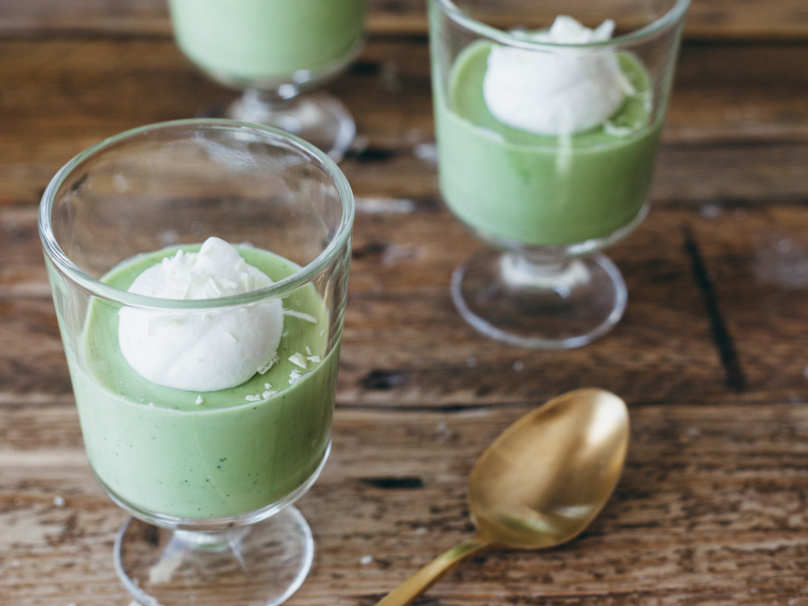

慕斯 MOUSSE
慕斯是一种以慕斯粉为主材料的糕点。外型、色泽、结构、口味变化丰富，更加自然纯正，通常是加入奶油与凝固剂来制作成浓稠冻状的效果。
慕斯的英文是mousse，是一种奶冻式的甜点，可以直接吃或做蛋糕夹层，通常是加入奶油与凝固剂来造成浓稠冻状的效果。
慕斯是从法语音译过来的。慕斯蛋糕最早出现在美食之都法国巴黎，最初大师们在奶油中加入起稳定作用和改善结构，口感和风味的各种辅料，冷冻后食用其味无穷，成为蛋糕中的极品。慕斯与布丁一样属于甜点的一种，其性质较布丁更柔软，入口即化。
特点
慕斯的性质及口感比布丁更为柔软，入口即化。
早期制作慕斯最重要的是胶冻原料如琼脂、鱼胶粉、果冻粉等，如今也有专门的慕斯粉了。
作时最大的特点是配方中的蛋白、蛋黄、鲜奶油都须单独与糖打发，再混入一起拌匀，所以质地较为松软，有点像打发了的鲜奶油。慕斯使用的胶冻原料是动物胶，所以需要置于低温处存放。
图鉴
芒果慕斯

提拉米苏慕斯

抹茶慕斯
巧克力慕斯